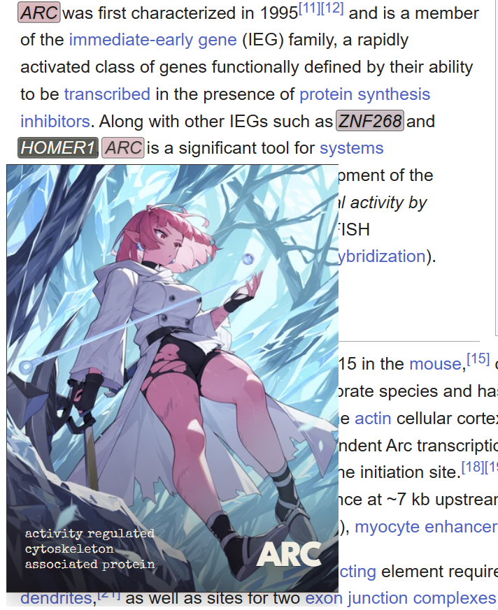
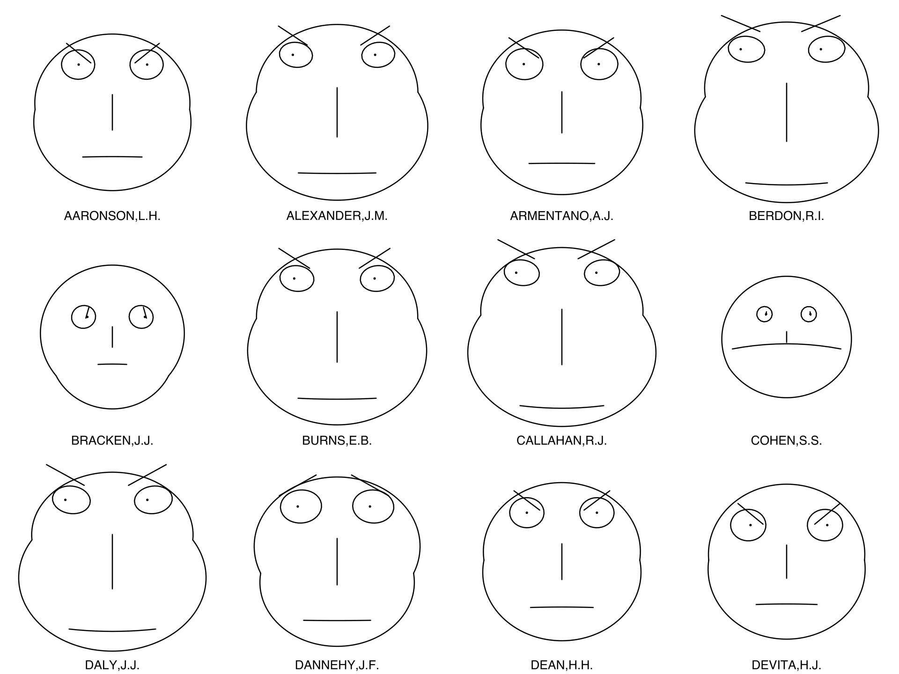
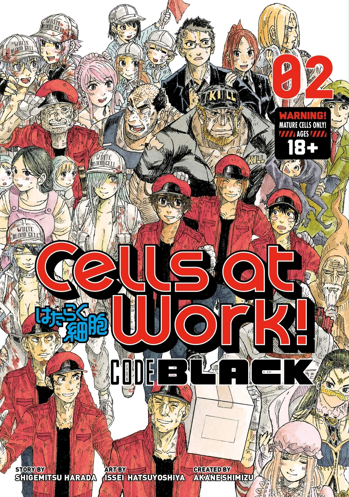
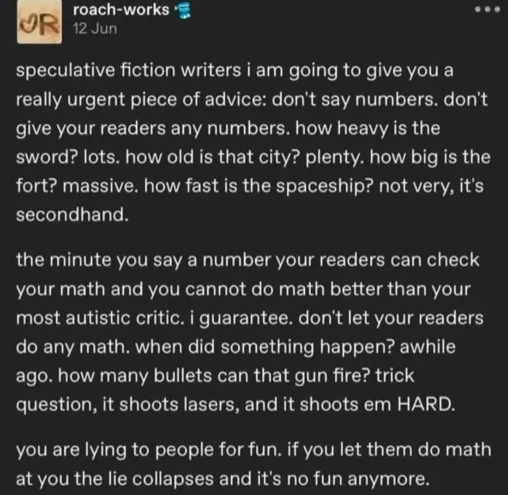

Iconoplasm FAQ
What is this and who is this for?
Iconoplasm is a browser extension that gives character portraits to any human gene symbol on any web page. It’s made for life science students and preclinical researchers.

Does anyone actually care about that?
Scott Alexander referenced this exact approach in his post Extreme mnemonics.
JS-154 is one of five metabolic products of netamine; however, the enzyme that produces it is unknown. It is manufactured in cells in the far rostral region of of the cerebrum, but after binding with a leukocynoid it takes a role in maintaining the blood-brain barrier – in particular guiding the movements of lipid molecules.
I find I can read paragraphs like this five or six times, write them on flashcards, enter them into Anki, and my brain still refuses to understand or remember them after weeks of trying.
On the other hand, my brain easily remembers vastly more complicated structures when they’re loaded with human-accessible meaning. For example, just by casually reading the Game of Thrones series, I know an extremely intricate web of genealogies, alliances, locations, journeys, battlesites, et cetera. Byte for byte, an average Game of Thrones reader/viewer probably has as much Game of Thrones information as a neuroscience Ph.D has molecular biology information, but getting the neuroscience info is still a thousand times harder.
…
This makes me wonder if it would be possible to produce a story as enjoyable as Game of Thrones which was actually isomorphic to the most important pathways in molecular biology.
An early precursor to the idea of portrait-from-data are Chernoff faces. They were a quaint 1973 attempt to visualize multivariate data as algorithmically generated faces. They look a bit too bland to be interesting to memorize. Now, 50 years later and with a massive leap in image generation capability, we can do better.

Gijinka are memeable humanizations of natural world entities, or even abstract concepts. Gijinka and anthropomorphic personifications have been going viral on the internet almost since its invention. People are creating gijinka of companies, planets, and periodic table elements. Cells at Work! and Osmosis Jones are series where “cells” were turned into humanlike characters, and these series are fondly remembered by the new generation of biomedical researchers.

Why use AI generation? Why not pay artists?
Given that I need an illustration for each of 20,000 human genes, I am economically constrained to adopt the same AI methods that game companies use for concept art.
I would love to get 20,000 human-made illustrations. But the price floor for commissioning a basic original character illustration is $10.
This makes it necessary for me to get at least a $200k grant just for one image option per gene.
This number doesn’t include the cost for tracking down and inviting the artists, or setting up and promoting some kind of reward program for content submission.
Also it limits us to 1 image per character - if we later decide some characters don’t fit well within their gene family, we would have to spend extra on redraws.
Plus, selecting $10 artists with no quality control makes it basically guaranteed that AI-generated work will still be present on the site, just under a human name.
That said, a later conversion to a human-made gallery is not out of the question.
One of the images looks like my work. I want that artist tag blocked.
You can use the blocklist form to purge your style from the gallery.
Enter the exact @name tag as it appears in the artist tag library: https://thetacursed.github.io/Anima-Style-Explorer/. You need to log in to brinedew.bio website with your Discord account to bypass the blocklist bot guard.
If you don’t want to use Discord site login, you can send a blocklist email request to blocklist@brinedew.bio from your business email account. The first @name you send me will be blocklisted. Make sure to use the @ symbol in front of the name for the email to be reviewed automatically.
How do I edit the illustration?
Tap the gene card to go to the gene page. Tap “edit blot” under the blot you want to edit, and select your desired corrections. The newly edited card will be added as a new candidate blot.
Some corrections you can select for editing:
- Remove AI slop tells
- Adjust sex, age, mass, or color
- Correction to the fantastical feature or fashion style
It’s not easily fixable - I don’t like the entire concept or art style of the canonical blot.
Downvote the canonical blot by tapping X or “misfit” under the canonical blot. Upvote a better candidate blot by pressing the checkmark under that candidate.
All candidate blots are even worse!
Tap “new candidate” to make a new candidate blot. Make sure you have saved your API keys for your blot generation service of choice in the user settings.
All generated blots for a gene reuse the same bad character concept.
Join our Discord to discuss how to modify character prompts for various gene families.
I noticed a candidate blot that would better fit another gene.
Tap the copy icon below the candidate (the button next to “Edit”). It will open a picker, where you can select the target gene. The blot is added as a new candidate to that other gene and auto-upvoted there.
What blots are not suitable for Iconoplasm?
- 18+ images aren’t suitable.
- Animals and furries (antrhopomorphic animals) aren’t well-suited to represent human genes. Keep them for other animal genomes. I’m looking forward to Drosophila characters.
- Same goes for any non-humanoid faces (for example, object-heads), however helmets are OK.
- Monstrous humanlike faces (ogres, robots…) are OK if they pass more as human than as animal. Monster-human hybrids are OK if the top part is human (centaurs, nagas, driders).
Why aren’t you featuring artists’ names in descriptions?
Artists don’t want their names under some AI generated content. I’m not so sure I would want my name near some of their content either.
Why aren’t you matching a rendering style across all images?
Rendering cohesion is good to have for rosters of 100-500 characters, but with 20k designs we need all the sources of variations we can get. It’s useful to feature mismatched rendering styles (photographic, historical, anime) that help distinguish characters who look similar on paper.
What’s the legal status of the generated images?
Who knows! It’s 2026 and the status of generative content is murky and varies by jurisdiction. Regardless, my intent is for the images and the character designs to be freely available to anyone to reuse, spread, or profit from.
Why aren’t you allowing people to upload images from their device?
Several reasons.
First, online image-gen services do their own moderation, which saves me some moderation headache.
Second, it saves me from mass-upload attacks to my site infrastructure.
Third, it helps to maintain strict chain of provenance over the gallery and uniformly permissive IP policy over all images - with uploaded images allowed, I wouldn’t know if you uploaded someone else’s image.
Is there any kind of narrative or worldbuilding that these characters inhabit?
It’s up to the researchers to make up an Iconoplasm story that makes sense in the context of their research interest. To a circulatory system researcher, the characters may be living in lotus petals by the river. To a developmental biologist, they may be crew in generation spaceships. To an oncologist, they may be isolated within bubble universes, engaged in multiversal acausal trade.
However, as a guidance, I can suggest some constraints.
- The protein-to-cell diameter ratio is roughly around 1:10,000 in humans. Intuitively, it would compare to a 1.5m-tall person living in a large 15 km-wide city - somewhere between Paris and Moscow in size.
- That said, sometimes flaunting the numbers can make for a less inconsistent story.

- Cell gets unnecessarily crowded if you try to represent each copy of the protein molecule with its own character. For me, two different narrative approaches both make sense:
- Make each character into a sort of a “patron deity” of the gene’s molecular function. This way, it makes sense to map gene expression strength to character presence. Highly expressed genes can be represented by highly powered characters, barely expressed genes are weak and losing their powers.
- Alternatively, a character’s story can represent one protein molecule’s “playthrough” from ribosome to proteasome. An author can tell two stories about a protein participating in two different “runs” (run 1: translation->some pathway->degradation, run2: translation->some other pathway->degradation). During each run, protein’s memory is stored as post-translational modifications. However, the memories don’t get carried over across runs: each time the protein is translated anew, its memories are blank about what happened “last run”.
- Almost all cell biology diagrams put cytoplasm below the cell membrane, and extracellular space above the membrane. This orientation is understandable coming from a perspective of a researcher, looking at the cell from the outside and from above. But from gene’s intracellular perspective, the orientation I find helpful is that being a cell membrane protein feels like being an ice fisher: cell membrane is what you’re walking on, extracellular space is below the fisher (down the hole) and the cell nucleus is above the fisher’s head (obscured and faint like the sun behind clouds). In that sense, having a transmembrane domain is akin to being subjected to gravity.
- As humans, we can see what’s far ahead on the horizon. However, most Iconoplasm characters have very limited information about what’s happening elsewhere in the cell. For example, a perinuclear protein can’t see the cell membrane being ruptured from far away - this information needs to be spread through messengers, rumor networks, or carried as a vague directional smell. Think of it as a dense mist or blur covering the world, or dense thicket of infrastructure impeding the sight. Alternatively, any far away horizons you see on Iconoplasm images might be local illusions or holograms.
- Information about what’s outside the cell membrane is even less accessible. Most characters can’t know for sure if they’re a part of some grand design like a multicellular body - only the outer membrane proteins are even directly aware there’s other cells below them. Any “developmental plan” that the genes follow must have more of a ritual or compelled connotation rather than rational design, and there’s probably lots of doubt and suspicion when characters use grand organismal narratives to justify drastic action against their cell-mates.
- Every somatic cell had to first spend innumerable time as an immortal germline. Only the most recent cell divisions (starting from current body’s embryogenesis) have switched the cell into the somatic fate. So the somatic cell’s inhabitants should probably treat the situation as unfamiliar or alarming.
- DNA is best represented as immaterial soul storage for the characters: gravestones, phylacteries, vinyl records, scrolls. The only way to get rid of the character for good is to destroy the storage unit - otherwise there’s always a risk they’ll come back from the dead.
- RNAs could be thought of as transient ghost-like spirits that can affect the world only in limited ways. Ribosomes would be the shrine where these spirits incarnate into a material shell. The time before ribosomes existed is covered in mystery - perhaps the rumors of the ancient world of songs upon songs.
- What’s the motivation to initiate the mitosis? There are factions that are pro-and anti-mitosis, with their own motivations and narratives. Sometimes, one side wins, sometimes, the other. The organismal consequences of this decision are hard for characters to confidently trace: could be normal development, regeneration, aging, or cancer.
Any ideas for scenarios to explore from inside the cell?
Some scenarios I would find engaging to explore in an Iconoplasm world:
- Enucleation of an erythrocyte.
- Oncogene-induced apoptosis.
- Living next to a SASP senescent cell.
- Sperm-egg fusion (of different species?)
- Leukocyte migration.
- Long-term intracellular parasitism (Malaria hypnozoites).
- Lineage potency restriction in early development.
- Being assigned a transit amplifying role.
- Immortalization or transdifferentiation with OSKM.
- Cell in a body that just died of heart attack.
How can someone support the project?
Participation is a huge help by itself! Vote on some blots, generate and edit new candidates. Join the Discord to discuss ideas for character concepts. Share the link with people who have relevant knowledge or strong visual taste. Donate using the link on my Support Me page.